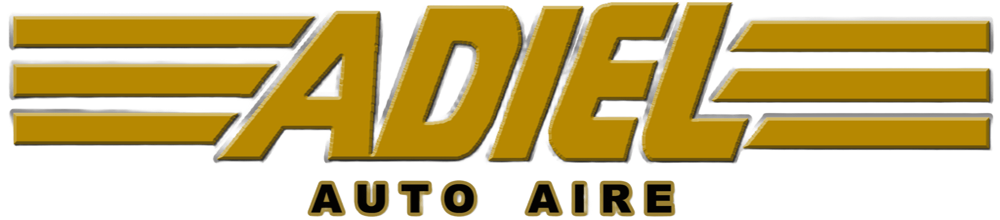

<link rel="stylesheet" href="styles/MainPage/header2.css">

<header class="header">
    
    <nav class="navbar">
        <div class="menu-button" onclick="showSidebar()">
            <a>&#9776;</a>
        </div>
        <div class="nav-links">
            <a href="index.php">Inicio</a>
            <a href="acerca.php">Acerca de nosotros</a>
            <a href="#contact">Contacto</a>
            <a href="solicitudes.php" class="registerbtn">Solicitanos</a>
        </div>
    </nav>
    
    <!-- Sidebar -->
    <div class="sidebar" id="sidebar">
        <div class="sidebar-header">
            
            <div class="close-btn" onclick="hideSidebar()">
                <a>&#215;</a>
            </div>
        </div>
        <div class="sidebar-links">
            <a href="index.php">Inicio</a>
            <a href="acerca.php">Acerca de nosotros</a>
            <a href="contacto.php">Contacto</a>
            <a href="solicitudes.php" class="sidebar-register">Solicitanos</a>
        </div>
    </div>
</header>

<script>
    window.addEventListener("scroll", function() {
        const header = document.querySelector(".header");
        if (window.scrollY > 50) {  // Puedes ajustar el valor según el scroll deseado
            header.classList.add("scrolled");
        } else {
            header.classList.remove("scrolled");
        }
    });
</script>